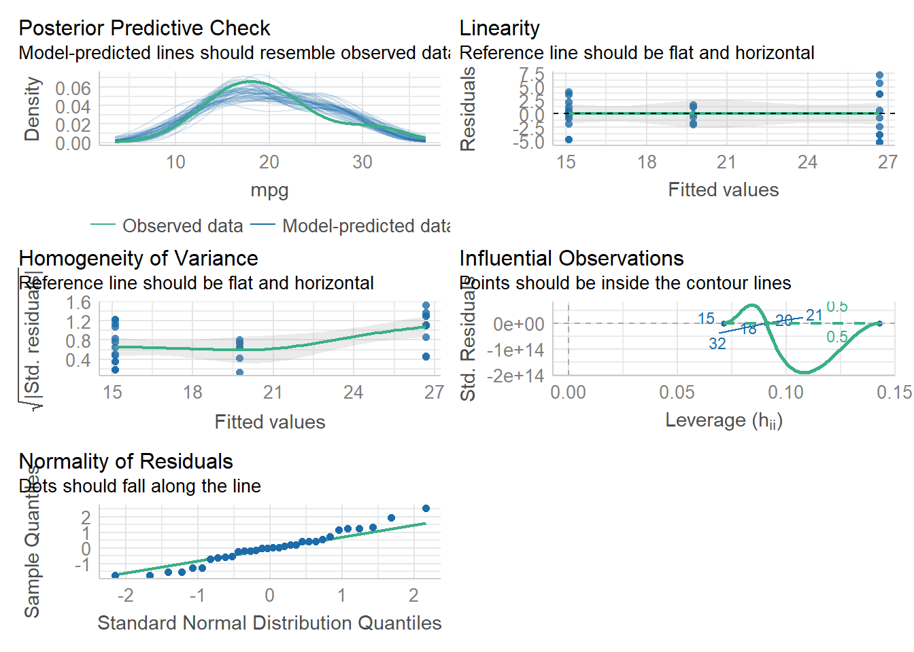

library(tidyverse) #For data manipulation and graphing
library(ggsci) #for color scales
library(patchwork) #to panel our graphs
library(performance) #check stat/model assumptions
library(see)
library(rstatix) #test for outliers, welch_anova_test
library(car) #levenes testANOVA
LEARNING OBJECTIVES
IN THIS TUTORIAL YOU WILL LEARN:
1.) The theory behind analysis of variance
2.) How to perform 1 way and multi-way ANOVA in R
3.) How to use TukeyHSD in R
4.) How to test assumptions of ANOVA
Additional Tutorials and Resources
1.) Load packages we need
Here we are loading our usual packages plus some additional ones for statistics. Performance is very useful as an assumption checker, so we will rely heavily on it. I’ll also show you how to assess outliers using rstatix.
2.) Analysis of Variance (ANOVA) theory and assumptions
Analysis of variance (ANOVA) is a common statistical test used to compare the means of multiple groups. A t-test can only compare the means of 2 groups. ANOVA can compare many groups, making it much more likely to be useful.
Let’s take a look at the theory behind ANOVA.

This figure has 3 groups (blue, yellow, and gray) with means represented by dotted vertical lines. The solid lines are the distributions of each group (essentially, the variation with-in a group). This variation within a group is called residual variance (Panel B). The goal ANOVA is to compare means to see if they differ. The way ANOVA works is that it compares the variance between groups (Panel A) with the residual variance (Panel B). If between group variance is great enough when compared to residual variance then you can conclude that there is some kind of difference between group means (at least 1 group mean differs from the others).
In summary: An ANOVA is a comparison of 2 variance estimates (between group vs within group), that is why we call is analysis of variance even though it really assess differences between means.
ANOVA relies on something called the F-statistic which we can calculate as: variance between groups / variance within groups (residual variance)
ANOVA operates best under the following assumptions:
1.) Independence of observations (each subject belongs to only 1 group, every observation is independent of other observations. There is no relationship or correlation between the observations in each group.)
2.) No significant outliers exist
3.) Normality: The data are approximately normally distributed
4.) Homogeneity of variances (the variance of the outcome variable should be similar in all groups)
NOTE on assumption violations:
Independence is the single most important assumption. It should not be violated. If it is, best practice is to run a different (non-parametric) statistical test.
The outlier assumption is easily handled, as outliers can be removed from data. That said, modern best practices in statistics encourage the user to remove fewer outliers (and only remove extreme outliers). This assumption is often ignored at little cost.
As with t-tests, if sample sizes are large enough (which they almost always are), the normality assumption can be violated. With small sample sizes you can transform your data to make it normal (w/ log, natural log, or square root).
Homogeneity of variances (Homoscedasticity). This one is complicated. In short,as long as sample sizes (n) are the same (or similar) for your groups, even with low sample sizes you can usually violate this assumption and be fine. Most people DO NOT even test for this assumption (or any of the others), but… it seems possible that any p-values derived from any ANOVA in which assumptions are violated are not that trustworthy.
There is a lot of argument about how and what the best practices for ANOVA are. Truthfully, I do not fully understand all of this, but I will show you how to do a few tests on your data before doing an ANOVA, just to be careful. I will argue for better statistical practices (that move beyond ANOVA and p-values in general) next week (if we have time).
1.) Independence. We need to consider our experimental design to test this one.
2.) Outliers To look for outliers, we can use a boxplot. Or the identify_outliers() function in the rstatix package. Here, we see outliers in the 8 cylinder group, but they are not extreme and are likely only outliers due to low n. So we will keep them (this is a judgment call)
ggplot(data=mtcars, aes(x=cyl, y=mpg, group=cyl))+
geom_boxplot() #dots are outliers, we see 2 in the 8 cyl group. But do they really look like outliers???#make cyl a factor! This matters :)
mtcars$cyl=as.factor(mtcars$cyl)
#identifying outliers using the rstatix package!
mtcars %>%
group_by(cyl) %>%
identify_outliers(mpg) #Here we can see that the 2 points we saw in the boxplot are actually 3 (2 of the outliers have the same mpg). They test as outliers but NOT extreme outliers. So we will not remove them. # A tibble: 3 × 13
cyl mpg disp hp drat wt qsec vs am gear carb is.outlier
<fct> <dbl> <dbl> <dbl> <dbl> <dbl> <dbl> <dbl> <dbl> <dbl> <dbl> <lgl>
1 8 10.4 472 205 2.93 5.25 18.0 0 0 3 4 TRUE
2 8 10.4 460 215 3 5.42 17.8 0 0 3 4 TRUE
3 8 19.2 400 175 3.08 3.84 17.0 0 0 3 2 TRUE
# ℹ 1 more variable: is.extreme <lgl>3. & 4.) Normality and Homoscedasticity
We can test normality and homoscedasticity of the entire anova using check_model() in the Performance package.
model1<-aov(mpg~cyl, data=mtcars) #this is our ANOVA model! We will learn more about this on the next tab
check_model(model1)
We can also assess normality using a Shapiro-Wilk test. If p<0.05 then normality CANNOT be assumed.
shapiro_test(residuals(model1)) #here, we have a normal (nearly) distribution# A tibble: 1 × 3
variable statistic p.value
<chr> <dbl> <dbl>
1 residuals(model1) 0.971 0.518To assess normality by group we must use the pipe %>% again!Here, we see that we have normal dist for all 3 groups
mtcars %>%
group_by(cyl) %>%
shapiro_test(mpg) #from the rstatix package. Note: the base R version shapiro.test doesn't work here# A tibble: 3 × 4
cyl variable statistic p
<fct> <chr> <dbl> <dbl>
1 4 mpg 0.912 0.261
2 6 mpg 0.899 0.325
3 8 mpg 0.932 0.323To assess homogeneity of variance, we can use check_model to see it graphically. If we want to see numbers, we can use a levene test. A levene test p<0.05 indicates that there IS a significant difference in variances between the treatment groups. Compare this w/ our plots from check_model(). What do you think?
leveneTest(mpg~cyl, data=mtcars)Levene's Test for Homogeneity of Variance (center = median)
Df F value Pr(>F)
group 2 5.5071 0.00939 **
29
---
Signif. codes: 0 '***' 0.001 '**' 0.01 '*' 0.05 '.' 0.1 ' ' 1Technically, the levene test tells us we cannot do an ANOVA without doing a welch test (which accounts for the different variances). So, we can do the welch test one-way anova. Looking at the data in our check_model, we can see pretty clearly that there is a difference in variance among out 3 cylinder groups. So that could be a problem. We can ignore this assumption due to high n (which is done often but isn’t always best practice), or we could do a modified version of the ANOVA that accounts for this difference in variation. This is called a welch test.
3.) One-way Anova
The simplest ANOVA is a one-way ANOVA, which is just an extension of a t-test. T-tests can only compare 2 means, but ANOVA can compare more than 2 groups. The simplest example of an ANOVA is when we have data organized by one grouping variable (hence, one-way). For example, if we want to know how mpg varies by cyl in mtcars, we would use a one-way anova. NOTE: if variance differs significantly between our groups, we want to run a welch_anova_test() instead of a one way anove (aov). welch_anova_test() is available in the rstatix package that we loaded above. aov() is present in base R.
So, let’s plot the data and then do some stats!
ggplot(data=mtcars, aes(x=cyl, y=mpg, group=cyl))+
geom_boxplot() #dots are outliers, we see 2 in the 8 cyl group. But do they really look like outliers???mtaov<-aov(mpg~cyl, data=mtcars)
mtaov #normally, an aov() will give us a p-value. Here it recognizes that "estimated effects may be unbalanced". We can find the p-value in summary()Call:
aov(formula = mpg ~ cyl, data = mtcars)
Terms:
cyl Residuals
Sum of Squares 824.7846 301.2626
Deg. of Freedom 2 29
Residual standard error: 3.223099
Estimated effects may be unbalancedsummary(mtaov) #this anova will still give us a p-value Df Sum Sq Mean Sq F value Pr(>F)
cyl 2 824.8 412.4 39.7 4.98e-09 ***
Residuals 29 301.3 10.4
---
Signif. codes: 0 '***' 0.001 '**' 0.01 '*' 0.05 '.' 0.1 ' ' 1welch_anova_test(mpg~cyl, data=mtcars) #here, we do get a p-value that is <0.05, suggesting that there is an effect of cylinders onf mpg# A tibble: 1 × 7
.y. n statistic DFn DFd p method
* <chr> <int> <dbl> <dbl> <dbl> <dbl> <chr>
1 mpg 32 31.6 2 18.0 0.00000127 Welch ANOVAAnother Anova example
Let’s apply those ANOVA skills to a new dataset. We will use the dataset called ‘iris’ that is built into R. It’s a simply dataframe that contains attributes of different flowers. It is similar to penguins!
First step: Let’s plot some data! I want to assess the effect of species on petal.length
head(iris) Sepal.Length Sepal.Width Petal.Length Petal.Width Species
1 5.1 3.5 1.4 0.2 setosa
2 4.9 3.0 1.4 0.2 setosa
3 4.7 3.2 1.3 0.2 setosa
4 4.6 3.1 1.5 0.2 setosa
5 5.0 3.6 1.4 0.2 setosa
6 5.4 3.9 1.7 0.4 setosaggplot(data=iris, aes(x=Species, y=Petal.Length, group=Species))+
geom_boxplot(aes(fill=Species))+
theme_bw()+ #remember this?
scale_color_npg()+
scale_fill_npg()
Our plot shows us that there is almost certainly an effect of species on petal length. But, let’s check that with an anova.
Second step: Check ANOVA assumptions.
Independence: We will assume this is fine. We can’t possibly know for sure given the source of the data. Outliers: We already checkd visually. Nothing stands out as an extreme outlier. But let’s confirm
iris %>%
group_by(Species) %>%
identify_outliers(Petal.Length) #No extreme outliers, so let's carry on# A tibble: 5 × 7
Species Sepal.Length Sepal.Width Petal.Length Petal.Width is.outlier
<fct> <dbl> <dbl> <dbl> <dbl> <lgl>
1 setosa 4.3 3 1.1 0.1 TRUE
2 setosa 4.6 3.6 1 0.2 TRUE
3 setosa 4.8 3.4 1.9 0.2 TRUE
4 setosa 5.1 3.8 1.9 0.4 TRUE
5 versicolor 5.1 2.5 3 1.1 TRUE
# ℹ 1 more variable: is.extreme <lgl>Normality and Homoscedasticity
Visual Check Using check_model() we see that we have a normal distribution (yay) but there is some concern about homogeneity of variance.
modeliris<-aov(Petal.Length ~ Species, data=iris)
check_model(modeliris)Numbers check (shapiro for normality, levene for homosced) Normality is fine, but homoscedasticity assumption is not met, so we need a Welch test
#entire model normality
shapiro_test(residuals(modeliris)) #this comes out significant indicating non-normality in the residuals. This is clearly not the case when we look at all of the other data and figures we have, so let's not worry about it. # A tibble: 1 × 3
variable statistic p.value
<chr> <dbl> <dbl>
1 residuals(modeliris) 0.981 0.0368#normality of each group
iris %>%
group_by(Species)%>%
shapiro_test(Petal.Length) # All come out as normal, note the almost significant p for setosa# A tibble: 3 × 4
Species variable statistic p
<fct> <chr> <dbl> <dbl>
1 setosa Petal.Length 0.955 0.0548
2 versicolor Petal.Length 0.966 0.158
3 virginica Petal.Length 0.962 0.110 #Homogeneity of variance /Homoscedasticity
leveneTest(Petal.Length~Species, data=iris) #This is significant, so there is an issue with heterogeneity of variance and that assumption is not met. Thus, we need to do a Levene's Test for Homogeneity of Variance (center = median)
Df F value Pr(>F)
group 2 19.48 3.129e-08 ***
147
---
Signif. codes: 0 '***' 0.001 '**' 0.01 '*' 0.05 '.' 0.1 ' ' 1Finally, let’s run the anova and see if we need a welch test
#regular anova
aoviris<-aov(Petal.Length~Species, data=iris)
aoviris #this tells us we may have unbalanced effectsCall:
aov(formula = Petal.Length ~ Species, data = iris)
Terms:
Species Residuals
Sum of Squares 437.1028 27.2226
Deg. of Freedom 2 147
Residual standard error: 0.4303345
Estimated effects may be unbalancedsummary(aoviris) #this summary still gives us a p value, so are we really doing something wrong?? Df Sum Sq Mean Sq F value Pr(>F)
Species 2 437.1 218.55 1180 <2e-16 ***
Residuals 147 27.2 0.19
---
Signif. codes: 0 '***' 0.001 '**' 0.01 '*' 0.05 '.' 0.1 ' ' 1#welch anova
welchiris<-welch_anova_test(Petal.Length~Species, data=iris) # We see a significant effect
welchiris# A tibble: 1 × 7
.y. n statistic DFn DFd p method
* <chr> <int> <dbl> <dbl> <dbl> <dbl> <chr>
1 Petal.Length 150 1828. 2 78.1 2.69e-66 Welch ANOVA4.) Two-way Anova
The reason that ANOVA is so widely used is that it is very flexible. So far, we have learned how to assess whether one variable impacts another. But we can actually assess the impacts of several variables on each other. Here we will talk about a specific case, the two-way ANOVA
Let’s take a look at an example Two-Way ANOVA
aov1<-aov(mpg~cyl*gear, data=mtcars) #maybe we are unbalanced, we can check assumptions after
summary(aov1) #here we see a p-value and everything else we want for a stats table Df Sum Sq Mean Sq F value Pr(>F)
cyl 2 824.8 412.4 38.606 1.64e-08 ***
gear 1 7.0 7.0 0.652 0.427
cyl:gear 2 16.6 8.3 0.775 0.471
Residuals 26 277.7 10.7
---
Signif. codes: 0 '***' 0.001 '**' 0.01 '*' 0.05 '.' 0.1 ' ' 1Check model assumptions Here, we see that normality is fine, and that there may be some issues w/ variance, but it is probably fine. Multicollinearity is a new figure for us. I will explain it, but in short, it means that our two way anova is testing the effects of 2 variables (cyl and gear) that are correlated.
check_model(aov1)What about outliers? Let’s do a visual and a numerical check
ggplot(data=mtcars, aes(x=cyl, y=mpg, color=cyl))+
geom_boxplot()+
theme_bw()+
facet_wrap(~gear)mtcars %>%
group_by(cyl, gear) %>%
identify_outliers(mpg) #No extreme outliers, so let's carry on [1] cyl gear mpg disp hp drat
[7] wt qsec vs am carb is.outlier
[13] is.extreme
<0 rows> (or 0-length row.names)Let’s revisit our ANOVA and interpret it!
summary(aov1) Df Sum Sq Mean Sq F value Pr(>F)
cyl 2 824.8 412.4 38.606 1.64e-08 ***
gear 1 7.0 7.0 0.652 0.427
cyl:gear 2 16.6 8.3 0.775 0.471
Residuals 26 277.7 10.7
---
Signif. codes: 0 '***' 0.001 '**' 0.01 '*' 0.05 '.' 0.1 ' ' 1This shows us that there is a significant effect of cylinder on mpg. However, there is no effect of gear of of the interaction of cyl and gear (cyl:gear). This type of ANOVA is called an interactive two-way anova.
When building an ANOVA (or any statistical model) there are two ways to look at multiple factors. We can do additive (+) or interactive (*). Additive tests the effects of each variable seperately. Interactive does the same plus an interaction term.
Let’s look at the difference
aov1<-aov(mpg~cyl*gear, data=mtcars)
summary(aov1) Df Sum Sq Mean Sq F value Pr(>F)
cyl 2 824.8 412.4 38.606 1.64e-08 ***
gear 1 7.0 7.0 0.652 0.427
cyl:gear 2 16.6 8.3 0.775 0.471
Residuals 26 277.7 10.7
---
Signif. codes: 0 '***' 0.001 '**' 0.01 '*' 0.05 '.' 0.1 ' ' 1aov2<-aov(mpg~cyl+gear, data=mtcars)
summary(aov2) Df Sum Sq Mean Sq F value Pr(>F)
cyl 2 824.8 412.4 39.236 7.57e-09 ***
gear 1 7.0 7.0 0.663 0.422
Residuals 28 294.3 10.5
---
Signif. codes: 0 '***' 0.001 '**' 0.01 '*' 0.05 '.' 0.1 ' ' 1We see that the p-values are slightly different here and that the additive anova does not include an interaction term. When do you think we might need additive vs. interactive? Does it really matter? The answer is really dependent upon your question!
You can use as many terms as you want in an anova, but the more you use the smaller the sample size will get and the harder it will be to interpret. We will talk about best practices in model building next week if we have time.
For now, we have 1 more thing to learn! We have used ANOVA to determine that there is an effect of cyl on mpg. But, which groups within cylinders are different from each other?
For that, we need post-hoc tests!
5.) TUKEY Honestly Significant Difference test (HSD)
First, let’s look at our data. We saw from our ANOVA that there is a significant effect of cyl on mpg
ggplot(data=mtcars, aes(x=cyl, y=mpg, fill=cyl))+
geom_boxplot()+
theme_bw()+
scale_color_npg()+
scale_fill_npg()aovtest<-aov(mpg~cyl, data=mtcars)
summary(aovtest) Df Sum Sq Mean Sq F value Pr(>F)
cyl 2 824.8 412.4 39.7 4.98e-09 ***
Residuals 29 301.3 10.4
---
Signif. codes: 0 '***' 0.001 '**' 0.01 '*' 0.05 '.' 0.1 ' ' 1Great, we know about that effect. But which number of cylinders gives us the best mpg? It looks like 4 is the answer. But we still don’t know! That is really what our hypothesis is most likely the be!
To test that, we need to do a post-hoc test. I like the TUKEY honest significant difference test (which functions like a bnunch of t-tests all at once)
Here is how we do it!
aovtest<-aov(mpg~cyl, data=mtcars)
TukeyHSD(aovtest) Tukey multiple comparisons of means
95% family-wise confidence level
Fit: aov(formula = mpg ~ cyl, data = mtcars)
$cyl
diff lwr upr p adj
6-4 -6.920779 -10.769350 -3.0722086 0.0003424
8-4 -11.563636 -14.770779 -8.3564942 0.0000000
8-6 -4.642857 -8.327583 -0.9581313 0.0112287The Tukey shows us comparisons of each cylinder category with one another. We see that There are significant differences between all 3 groups! This tells us definitely, that MPG is highest with 4 cylinders and lowest with 8.